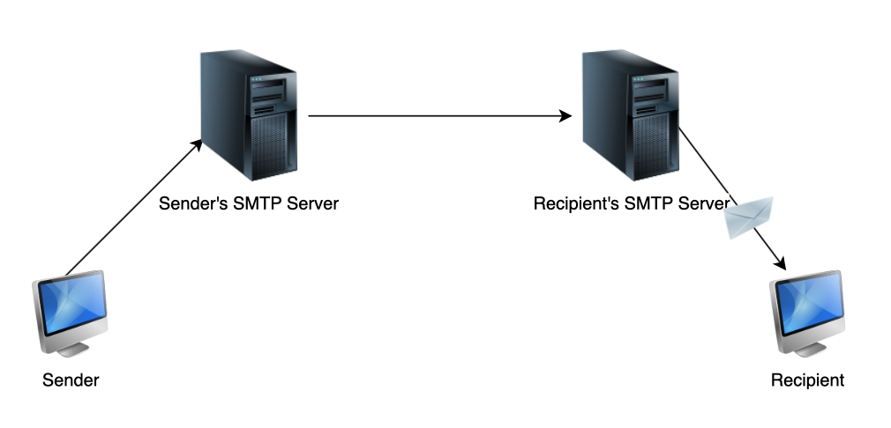

Preface
- http://flashcards.wizardzines.com
- https://jvns.ca/networking-zine.pdf
(jvns’s network zines)
OSI model
OSI model vs. TCP/IP model


| TCP/IP layer | OSI layers | Data | Concepts | Protocols | Where |
|---|---|---|---|---|---|
| Layer 4 Application | 5,6,7 | User data like email, webpage | HTTP, SSH, WebSocket, DNS, TLS, Telnet, DHCP, IMAP, POP, SMTP, BGP | ||
| Layer 3 Transport | 4 | Source & dest port, ACK Checksum—(above) | Ensure successful and reliable delivery. Requires syncing up with recipient. Segments the data. Ports. Sessions. Stream sockets. | TCP, UDP | OS kernel, system libraries |
| Layer 2 Internet | 3 | Source & dest IP addr—(above) | Routing, addressing, subnetting, packets | IP, ICMP | OS kernel, routers |
| Layer 1 Network access/link | 1,2 | Handles physical infrastructure and conversion digital data to signals. | Ethernet, Wi-Fi, MAC | Device drivers |
Cloud

Layer 7 - Application
HTTP
Cookie
Cookies are unique string identifiers that can be stored on the client’s browser to keep track of client’s state (for the purpose of logging in, serving customised content). They are set by the server through HTTP headers. After the cookie is set, it’s sent along with subsequent HTTP requests to the same server to allow the server to know who is contacting it.
Things involved in the process of setting and using cookies: HTTP request, HTTP response, cookie file on the client’s browser and the database of cookie-user values on the server
Cookie file contains:
- Website’s domain
- String value of cookie
- Date that cookie expires
Set cookie: session=44ecb091; path=/servlets
Note: 3rd party cookies are cookies set for domains that are not being visited. Blocking them is not enough due to several workarounds like respawning cookies etc.
Safari: Preferences > Privacy
Chrome: DevTools > Application > Storage > Cookies
HTTP clients
browser, cURL, postman, XMLHTTPRequest API, Fetch API
Reliance on TCP
HTTP uses TCP as its underlying transport protocol so that messages are guaranteed to get delivered in order. A connection must first be made.
HTTP status codes
- 200 OK - request successfully processed
- 301 - moved permanently
- 403 Forbidden - server denied access to resource
- 400 Bad Request - request is malformed
- 401 Unauthorised - request requires authentication
- 404 Not Found - resource is invalid and does not exist on the server
- 500 Internal Server Error
- 503 Service Unavailable - server overloaded or internal system of server has faile
Content Security Policy
HTTP
HyperText Text Transfer Protocol.
HTTP is a client-server application layer protocol.
HTTP is a request-response protocol that defines format of messages to be exchanged between web clients and web servers. It is a stateless protocol in which no session information is retained by the server. This means that if a client requests the same object multiple times in a row, the serve would send it and would not know that the same client is requesting the same object repeatedly.


“Payload” = part of transmitted data that is the actual intended message.
Types of HTTP connections
-
Non-persistent HTTP connections
- The client initiates a TCP connection with a server.
- The client sends an HTTP request to the server.
- The server retrieves the requested resource from its storage etc. and sends it back to the client.
- THe client receives the resource, say an HTML. If that file has references to more resources, steps 1-4 are repeated for each of those.
- The server closes the TCP connection.
-
Persistent HTTP connections
Because an HTTP session typically involves multiple non-persistent HTTP connections, the TCP connections which are established and torn down multiple times are inefficient. Persistent HTTP connections are developed such that the duration of the time before the server closes the connection is configurable. Hence, only 1 TCP connection is used to serve multiple requests.
HTTP session
An HTTP session is a sequence of network request-response transactions.
- An HTTP client initiates a request by establishing a TCP connection to a particular port on the HTTP server.
- The HTTP server listening on that port waits for a client’s request message.
- Upon receiving the request, the server sends back a status line and a message.
HTTP messages
HTTP messages are in plain ASCII text
-
Request
GET /index.html HTTP/1.1 Request line (method, URL, version) Host: www.google.com Header line Connection: keep-alive Header line User-Agent: Mozilla/5.0 Header line Accept-language: fr. Header line Accept: text/html Header line \r\n Other headers: Cookie: value -
Response
HTTP/1.1 200 OK Status Connection: close Header line Date: Tue, 18 Aug 2020 ... Header line (date of response) Server: www.google.com Header line Last-Modified: ... Header line (date object last mod) Content-Length: 16824 Header line (bytes) Content-Type: text/html Header line \n <binary data> Object Other headers: Set-cookie: value -
Route/path
-
query parameter
-
Body
- JSON
-
Form fields
-
Header
Content types (encoding)
application/x-www-form-urlencoded (POST)
Normal
POST /test HTTP/1.1
Host: foo.example
Content-Type: application/x-www-form-urlencoded
Content-Length: 27
field1=value1&field2=value2
multipart/form-data (POST)
When there are files
POST /test HTTP/1.1
Host: foo.example
Content-Type: multipart/form-data;boundary="boundary"
--boundary
Content-Disposition: form-data; name="field1"
value1
--boundary
Content-Disposition: form-data; name="field2"; filename="example.txt"
value2
--boundary--
text/plain (POST)
HTTP methods
-
GET - fetch an existing resource
-
POST - create a new resource
-
HEAD - fetch HTTP headers sent
-
DELETE - delete an existing resource
-
PUT - update an existing resource
-
OPTIONS
curl -X OPTIONS https://google.com -i- Identify allowed request methods (eg. GET etc.). Response contains an
Allowheader. - Preflighted requests in CORS
- Identify allowed request methods (eg. GET etc.). Response contains an
HTTP headers
(basic)
-
Date: Sat, 03 Jul 2021 07:23:23 GMT
-
Server: nginx
-
Content-Length: 1125
Entity's body size (bytes)
-
Content-Type: text/html; charset=utf-8
Resource's media type
(security)
-
Strict-Transport-Security: max-age=31536000; includeSubDomains
Tell a browser you should only load the website in HTTPS. Here is one year.
-
Content-Security-Policy: ****default-src 'self'; ****style-src 'self'; ****script-src 'self'; object-src 'self'; connect-src 'self'; frame-src 'self'; image-src 'self'
Whether to load assets (eg. documents, CSS, images, JavaScript)
https://report-uri.com/home/analyse/
There's a Content-Security-Policy-Report-Only header for debugging purposes.
-
X-Frame-Options: {DENY, SAMEORIGIN, ALLOW-FROM https://example.com}
Whether to allow your website to be framed or not.
-
X-Content-Type-Options: nosniff
Whether the browser can MIME-sniff the resource. MIME-sniffing happens (for some web browsers) to determine the content of an asset. Specific to IE and Chrome. With clever naming, a resource can be determined to be an HTML document which has malicious script.
-
Referrer-Policy: no-referrer
Tell the browser how much information to put in this header when navigating away from the document.
(new)
- X-Processing-Time: 0.061
HTTPS
- Authenticity
- Confidentiality or privacy
- Integrity
1. Server
- Generate private key
- Use private key to generate CSR. Includes info like
- Website’s URL
- public key (gotten from private key)
- Company details
- Country
https://www.namecheap.com/support/knowledgebase/article.aspx/9592/14/generating-a-csr-on-amazon-web-services-aws/
2. Sectigo (via Namecheap)
- Enter CSR code
- Confirm that you own the domain (DCV)https://www.namecheap.com/support/knowledgebase/article.aspx/9637/68/how-can-i-complete-the-domain-control-validation-dcv-for-my-ssl-certificate/?_ga=2.260912141.1610096874.1622123522-993745155.1616320593
- Receive the SSL cert in email. SSL cert contains info like:
- The website’s URL
- Public key (from the private key that we generated)
- Certificate authority (certificate issuer)
- Expiry date
3. Server
- Concatenate all certs that you have (???)
- Run server and specify cert and private_key
4. Browser

- Browser visits an https website
- Server replies
- Server sends back a cert
- Server key exchange, server gives client public key
-
Browser then verifies: 1. Checks if hostname in cert is same as URL 2. Checks if CA is valid 3. Checks if cert is expired
- Browser and server creating a symmetric key ("session key") that can be used for encrypting future data.
-
-
-
- Browser and server created a symmetric key ("session key") that can be used for encrypting future data.
——————————
- TLS handshake
- Exchange public key (asymmetric encryption)
- Generate session keys (symmetric encryption)
- Exchange info using session keys
——————
https://decoder.link/sslchecker/
https://www.cloudflare.com/learning/ssl/how-does-ssl-work/
https://www.thesslstore.com/blog/how-does-https-work/
https://www.ssllabs.com/ssltest/analyze.html
https://hstspreload.org/
https://stackoverflow.com/a/67197597/4570466
SSH
SSH implementations:
- OpenSSH (macOS)
- PuTTY (Windows, Linux)
https://robotmoon.com/ssh-tunnels/
2 asymmetric keys used — key pair 1 (ephemeral; server: private key) & key pair 2 (client: private key)
-
Client begins TCP handshake
(SSH is built on top of TCP)
-
Set up session key (shared key)
Ephemeral key pair 1 used to set up symmetrical encryption. Server gives the client the public key. Diffie-Hellman algorithm is used here.
-
Client authenticates
Use key pair 2 which has been generated previously. To authenticate, server uses public key 2 to encrypt some message. Client proves that it can decrypt using private key 2.
Client calculates a hash which is a function of the decrypted message and other metadata, then sends to server.
Server compares with its own calculation of hash (which should be the same).
Some authentication methods:
- RSA
- ECDSA
- Ed25519
-
Client accesses remote shell
Not for Git, this part is not used. git clone command using SSH only involves establishing a secure connection between the client and server.
Secure shell
Cryptographic protocol to allow a secure connection to a remote host over an unsecured network.
Authenticate using one of the following:
- Password
- Private key
- SSH certificates
SSH (Secure Shell)
Cryptographic network protocol that provides administrators with a secure way to access a remote computer. SSH also refers to the suite of utilities that implement the protocol. Secure Shell provides strong authentication and secure encrypted data communications between two computers connecting over an insecure network such as the Internet. SSH is widely used by network administrators for managing systems and applications remotely, allowing them to log in to another computer over a network, execute commands and move files from one computer to another.
Workflow

SSH port forwarding / SSH tunnel
- Local
- Remote

SSL/TLS
Secure Sockets Layer / Transport Layer Security
https://tls13.xargs.org/
Used for:
- Privacy: SSL encrypts data transmitted across the web
- Authentication: make sure when you connect to google it’s actually Google
- Data integrity: verifying data is not tampered with before reaching its intended recipient
IN other words, HTTPS = HTTP + TLS.
SSL certificate
A SSL certificate contains:
- the hostname(s) it’s valid for
- a public key
- an expiration date
- signature(s) from a CA
How SSL is issued
CA (Certificate Authority), server, web browser
- CA signs the certificate with its own private key.
- Server installs certificate.
Free certificates are just as secure
WHo can sign? Certificate authority or you.

See a server's SSL cert
openssl s_client -connect jvns.ca:443 -servername jvns.ca
DNS
Domain Name System
DNS is a client-server application layer protocol that translates hostnames on the Internet to IP addresses. DNS is a server and a database.
Get my DNS server
cat /etc/resolv.conf
where nameserver is the local dns server
The computer has a Local resolver library to cache DNS mappings.
or
nslookup <anywebsite>
Query DNS records
nslookup
-type=A/mx <website>
-debug <website>
host -t a/ns/mx <website>
dig @8.8.8.8 jvns.ca @ means querying a 8.8.8.8 DNS server
dig +trace jvns.ca Works like recursive DNS server
time dig @1.1.1.1 twitter.com
time dig @8.8.8.8 twitter.com
Reverse DNS lookup
dig -x 172.17.13.217
Chrome DNS lookup
chrome://net-internals/#dns
üí° "DNS propagation" is a misleading term. You're not actually waitinf for DNS records to propagate, you're waiting for cached records to expire.
DNS as distributed hierarchical database
The DNS database is distributed
- To avoid single point of failure
- To handle massive amounts of traffic
- To make it closer to certain locations
- To handle different domain hierarchies
Anatomy of domain name
discuss.educative.io
<sub-domain>.<second level domain>.<top-level domain>
Types of DNS servers
- Authoritative nameserver: source of truth
- DNS recursor (eg. 8.8.8.8)
DNS
Point of contact for DNS query
- Local DNS cache (local resolver library)
- DNS recursor (eg. hosted by ISP or 1.1.1.1)
- Root nameservers
- TLD nameservers (.edu server) and sub-domain nameservers (cs.stanford.edu server)
- Authoritative nameservers (stanford.edu server) (last stop)
DNS records / resource records
A DNS record is a list of mappings of hostname to IP address. An entry has the format:
(name, value, type, ttl)
where TTL (time-to-live) specifies how long the entry can be cached by the client. The values of “name”, “value”, and “type” vary from record types.
DNS resource record types
A Record (Address Record)
Associates a domain name or subdomain with an IPv4 address (32-bit / 4 bytes / 4 octets).
name host value
------------------------------------
educative.io @ 104.20.7.183
CNAME Record (Canonical Name)
Associates a domain name with an alias of another canonical name.
host value (canonical name)
------------------------------
www educative.io
MX Record
An MX (Mail) record is used to direct email to a specific mail server. Like a CNAME record, MX entries must point to a host name and should not be pointed directly to an IP address.
name=hostname
value=mailserver associated with host
type=MX
NS Record (DNS name server)
What DNS servers have the records for that domain?
name=
value=
type=
ttl=
AAAA Record (“quad-A” record)
IPv6 (8 bytes)
name=
value=
type=
ttl=
Telnet
Protocol to estable virtual terminal connection to remote host. Note that Telnet can be used to connect to any port on a remote host.
Telnet runs on top of TCP.
Type
telnet example.com 80
and
GET / HTTP/1.1
Host: www.example.com
WebSocket
A WebSocket connection is preferred when we need a persistent bi-directional ("full duplex") low latency data flow from the client to the server and back. The connection is open for as long as we want. Eg. chat apps, real-time social streams, browser-based multiplayer games.
BGP
Border Gateway Protocol
When a router receives a packet, it uses a protocol called BGP to decide what router the packet should go to next.
DHCP
Dynamic Host Configuration Protocol
DHCP servers automatically assign an unused IPv4 address to a new host. When a host is first attached to a subnet, it sends a DHCP request message in a UDP segment to the DHCP server.
port: 67
POP, IMAP
Post Office Protocol v3, Internet Message Access Protocol
POP/IMAP protocols are pull protocols used for getting email from an email server.
POP
POP phases
- User agent connects to POP server on TCP on port 110.
- User agent authenticates.
- User retrieves emails and mark emails for deletion.
- Close the POP3 session. Server makes updates based on users command. Deletes email accordingly. Only inbox.
Emails might not be in sync on multiple devices.
IMAP
(More complex)
- Emails are kept on the server and not deleted.
- All folders are synced.
- Inbox will be in sync on all devices.
SMTP
Simple Mail Transfer Protocol (Sending Mail To People)
SMTP is a push protocol, used to send email out to the SMTP server whenever it needs to. SMTP uses TCP, which means that transfers are reliable. Connection is established at port 25.
-
Email is sent to sender’s SMTP server.
-
Email is now placed on a message queue in the sending SMTP server.
-
Sender’s SMTP initiates a connection with the recipient’s SMTP server an will conduct an initial SMTP handshake.
-
Sender’s SMTP the email to recipient’s SMTP server.
sends
-
Using a pull protocol, email is then downloaded from the recipient’s SMTP server.

Format
Note: All SMTP email messages are in 7-bit ASCII
Delivered-To: user@gmail.com
Date: Thu, 16 May 2019 03:36:28 +0000 (UTC)
From: Fahim from Educative <fahim+newsletter@educative.io>
Mime-Version: 1.0
Reply-to: fahim@educative.io
Subject: Data analysis with R
To: user@gmail.com
 
Content-Transfer-Encoding: quoted-printable
Content-Type: text/plain; charset=UTF-8
Mime-Version: 1.0
 
Hey User,
 
Regards,
Raimi
Layer 4 - Transport
TCP: “You, Packet 243, you first. You, Packet 132, you next.”
TCP:
client ----syn------> server
<----syn+ack--
----ack------>
Transport layer
What are involved?
End-system’s OS kernel, system libraries
Responsibilities
- Provides a layer of abstraction for application-to-application delivery
- Segments the data
- Allows multiple conversations to occur at once
- Multiplexes and demultiplexes data
- Correctness of data
Connection-oriented protocol
Sockets
Sockets are gateways between applications and the network. Data is sent from application to socket. Sockets have an associated port number with them.
OS can take care of explicitly specifying a port. THis is called ephemeral ports, i.e.e OS will bind a socket to a port dynamically
Multiplexing and demultiplexing
Transport layer labels packets with the port number of the application a message is from and the one it is addressed to. This allows the layer to multiplex and demultiplex the data. TCP and UDP implement these differently.
Congestion
When more packets than the network has bandwidth for are sent through, some packets get dropped and some get delayed. Here are some fixes:
- Send packets at a slower rate in response to congestion
- Track changes in traffic
Principles of congestion control
-
Bandwidth allocation
Bandwidth is allocated per connection. A host can open multiple connections. Bandwidth cannot be divided and allocated equally among end-systems because real traffic is transmitted in bursts and not in one continuous stream.
-
Fairness
Increasing the transmission rate. Of one end-system necessarily decreases another.
-
Convergence
Bandwidth should be allocated such that no one host hogs all of it.
Principles of reliable data transfer
| Corrupted segments | Use checksum. Discard if invalid. |
|---|---|
| Lost segments | Use retransmission timer*. |
| Duplicated or reordered segments | Use sequence numbers |
*TCP sends an acknowledgement for almost every segment


Pipelining using the sliding/sending window
Method to wait for the acknowledgement of every transmitted message before sending another one. Go-back-n and selective repeat protocols ensure detection and retransmission of lost packets.
Terminologies
Rount trip time: time taken to send packet and get acknowledgement
Bandwidth: rate at which the newtwrok can transport bits
Throughput: amount of data that is actually transferred
TCP
Transport Control Protocol
TCP is a connection-oriented protocol. It is full-duplex (both hosts on a TCP connection can send messages to each other simultaneously).
Analogy
-
What if you can’t understand
what your friend is saying?
- Should you ask them to repeat what they said?
-
What if you haven’t heard them speak for a while?
- Does your friend simply not have anything to say?
- Has the phone lost reception and disconnected?
- Should you keep talking? If so, for how long?
- Should both you and your friend periodically say “mhmm” to indicate that you are present and listening?
TCP handshake (three-way)
- Client sends a TCP segment with SYN flag & …
- Server replies a TCP segment with SYN and ACK flag & …
- Client sends an ACK flag & …
How it works
Ensures that messages are always (i) delivered (ii) in the correct order. TCP: ensures data reaches the intended destination and data is not corrupted.
- Accept data from a data stream
- Divide into segments
- Identify and retransmit messages accordingly
- Reassemble messages if out of order
Multiplexing and demultiplexing

TCP packet
Consists of:
- Ethernet or wifi header
- IP header
- TCP header
- Source port number
- Destination port number
- Sequence number
- Acknowledgement number
- Header length
- …
- Flag
- synchronise
- finish
- push
- reset
- acknowledge
- urgent
- Window size
- Checksum
- Urgent pointer
- …
- Data (payload)

Control measures
- Congestion Control
- TCP start sending data slowly and increase only when the other end can keep up.
- TCP drops data when the other cannot keep up
- Flow control
- Congestion control
Applications using TCP
- Web browsing (HTTP, HTTPS)
- FTP
- SSH
- Email (SMTP, IMAP, POP)
- On-demand movie streaming
TCP 3-way handshake
Destination address is in IPv4
UDP
User Datagram Protocol
UDP is a connectionless protocol.
How it works
- UDP does not involve any initial handshaking.
- Message may not get delivered.
- Message may have some changes.
- Message may be delivered in the wrong order.
- Checks for corrupted message but does not correct them.
Multiplexing and demultiplexing
UDP message
Consists of:
- Source port number
- Destination port number
- Length of datagram (max 2^16)
- Checksum
- Data
Applications using UDP
- DNS
- Xbox Live
- Network management
- Live audio/video streaming
Layer 3 - Network (Internet)
IP: “You;re not supposed to be here!”
What are involved?
-
Routers
-
End-systems
-
Middleboxes (software)
Firewall
Possible filters
- Source address (blacklist)
- Destination address
- Protocol number
- TCP or UDP port number
- TCP flags
Types
- Stateless
- Stateful (session-based i.e. all subsequent packets are allowed through)
NATs
Network Address Translation
A NAT allows all of the hosts of a router share one or a few public IPv4 addresses (usually between private and public). This is to deal with shortage of IPv4 addresses. What it does is to modify the IP addresses in the IP header.
Responsibility
- Host addressing
- Message forwarding: Since many networks are partitioned into subnetworks and connect to other networks for wide-area communications, networks use specialised hosts, called gateways or routers, to forward packets between networks.
Protocols
packets
The unit of information in the network layer
Routing
The process of selecting a path for traffic in a network / between networks / across multiple networks
Datagram
A basic transfer unit
IP address
To identify each device in the world-wide web, Internet Assigned Numbers Authority (IANA) assigns IPV4 address as a unique identifier for each device on the Internet. Length of the IP address is 32 bits. Hence there are
2
32
2
32
IP addresses. Local IP is given by local router.
Router
A network device that can (i) bridge between different networks together, (ii) assign IP addresses using a protocol called DHCP, and (iii) determine what traffic can pass between them (most routers have a built-in Firewall).
Devices
- End host
- Router
- Middleboxes: eg. firewalls, network address translation devices
Organisation of the network layer
- Datagram organisation: use forwarding table
- Virtual circuit organisation
- Two conceptual planes:
- Data plane: protocols for hosts and routers to exchange packets carrying user data
- Control plane: protocols for routers to efficiently forward packets to final destination
Routing protocols
- Static: manually compute routes
- Dynamic
Routing table
IP
Internet Protocol
To be able to use the underlying data link technologies
Assumptions
- To provide unreliable connectionless services
- IP hosts must have fixed size 32-bit addresses
- IP must be compatible with a variety of data link layers
- IP hosts should be able to exchange variable-length packets
IP addresses
32-bit numbers written as 4 bytes. Eg. 1.2.3.4 corresponds to 00000001000000100000001100000100.
Multihoming
A router has as many IPv4 addresses as the number of interfaces it has in the data link later. These hosts are said to be multihomed.

Address classes
| Class | Length of subnet ID | Range | Default subnet mask | Remarks |
|---|---|---|---|---|
| Class A | 1 octet | 0.0.0.0 to 127.255.255.255 | 255.0.0.0 | |
| Class B | 2 octets | 128.0.0.0 to 191.255.255.255 | 255.255.0.0 | |
| Class C | 3 Octets | 192.0.0.0 to 223.255.255.255 | 255.255.255.0 | |
| Class D | For multicast | |||
| Class E | Reserved |
Subnetting
- Subnetting based on octets (deprecated).
- Variable-length subnetting.
| Subnet | No. of possible addresses | Lowest address | Highest address |
|---|---|---|---|
| 10.0.0.0/30 | 2^2 | 10.0.0.0 | 10.0.0.3 |
| 192.0.2.0/24 | 2^8 | 192.0.2.0 | 192.0.2.255 |
Address assignment using subnetting
- Subnet mask: host bits set to 0 eg. 203.128.22.0 and a host can be 203.128.22.7
- Network address: host bits set to 0 eg. 203.128.22.0.
- Broadcast address: host bits set to 255 (all binary 1’s) eg. 203.128.22.255
- Host address: host bits eg. 203.128.22.18
Special addresses
Self-identification
0.0.0.0/8
Loopback address
127.0.0.1/8
Each IPv4 host has a loopback interface that is not attached to a data link layer. This allows processes running on a host to use TCP/IP to contact other processes running on the same host. This is very useful for testing purposes.
Private addresses
10.0.0.0/8, 172.16.0.0/12, 192.168.0.0/16
Private networks that are not directly attached to the Internet.
Link-local address
169.254.0.0/16
Routing
Routing is done via a routing table and longest prefix match.
Interfaces
Hosts (computers) don’t have IP addresses. Interfaces on hosts have IP addresses.
Interfaces
- Ethernet interface
- Wifi interface
- Loopback interface
- Tunnel interface
- Virtual machine interface
IPv4 packet header
- Version
- Length
- Source address
- Destination address
- Protocol
- Protocol “1” is ICMP.
- Checksum
- Flags
- TTL
- IP data (payload)
Fragmentation and reassembly
IPv4 packets need to be fragmented depending on the data link layer’s maximum transmission capability. They can be as big as 64KB.

NAT (Network Address Translation)

Router is a device that connects two different IP networks.


ICMP
Internet Control Message Protocol
For diagnostics
- Used by
- ping
- traceroute
Messages
- Destination unreachable
- Network unreachable
- Host unreachable
- Protocol unreachable
- Port unreachable
- Fragmentation needed
- Redirect
- Time exceeded
- Echo request and echo reply
- …
IPSec
Secure network protocol suite that authenticates and encrypts packets of data.
Used in VPNs.
Layer 1/2 - Physical/Datalink
- Guided
- Twisted pair copper wire (carry electrical signals)
- Coaxial cable (carry electrical signals)
- Fiber optics (carry light)
- Multimode. Uses LED; works over 10km.
- Monomode. Uses laser; works over a few km.
- Unguided
- Terrestrial radio channels (radio waves):
- 1-2 meters: Bluetooth
- Up to 100 meters: WiFi
- Up to kilomteres: 3G, 4G, LTE
- Free-space optical communication (light)
- Terrestrial radio channels (radio waves):
Metallic media suffer from electrical noise and interference from nearby electrical sources.
Transmission and reception of raw bit streams over a physical medium. Conversion of signals.
Physical devices: Network interface card
What are involved?
?
Responsibilities
Receive packet from network layer and deals with providing hop-to-hop communication between entities directly connected by a physical link.
- MAC layer Responsible for controlling how devices in a network gain access to a medium and permission to transmit data
- Logical link control layer
Protocols
- 802.3 Ethernet
- 802.11 Wi-Fi
- Token Ring
- FDDI
Deals with framing (of the signal bits)
Medium Access Control
Controls the interaction between hardware and wired/optical/wireless medium. Data link layer addresses used in Ethernet networks are often called MAC addresses
ARP
Address Resolution Protocol
Data link layer protocol that maps end host’s IP address to data link’s address
To find the address,
- Check the IPv4 host’s ARP cache
- If none, send a broadcast ARP query frame on the LAN. This frame is received by all devices on the LAN. Host who knows the answer will reply
- Sender updates ARP cache
Address Resolution Protocol
mapping of (MAC address) → (IP address). This table is an ARP cache.
Hosts have this table. If the host doesn’t know a MAC address for a certain IP address, it sends out an ARP request packet, asking other machines for the matching MAC address.
The Address Resolution Protocol (ARP) is used to map an IP address to a fixed MAC address. If a host does not know a MAC address for a certain IP address, it broadcasts an ARP request packet asking other machines who is this. The machine with the corresponding IP address responds to this with an ARP reply packet with the MAC address. This result is stored in the ARP cache of the host.
| MAC address | IP address |
|---|---|
| 5f:44:11 | 192.20.1.1 |
Standards
- MIME type
Access networks
Networks that physically connect end systems (laptop, mobile phones) to the first router.
- Physical
- DSL modem (Digital Subscriber Line)
- Using telephony infrastructure thru telephone wires
- Dial-up
- Using telephony infrastructure thru telephone wires
- Cable internet
- Using cable TV infrastructure thru coaxial cable
- FTTH (Fiber to the home)
- Using optic fibres
- DSL modem (Digital Subscriber Line)
- Remote
- Satellite
- WiFi
Socket
Socket
A socket is the software interface between a process (the “port” that an application reserved) and the computer network (which is defined by the machine’s “IP address” in the network).
So, technically, processes communicate with each other using sockets.
Unix domain socket
- Data sent to unix socket never gets lost
- Use them to communicate between processes on the same computer
Type a URL on the browser
https://twitter.com/manekinekko/status/1281704000572858375
Troubleshooting
Quicks
netstat see open ports
Transport layer
sudo lsof list files and processes
-i list only network sockets
-i:8080 at port 8080
-t show only process ID
-P show port
View UDP packets
tcpdump [udp]
-c 10 capture 10 packets
-w output.pcap write to a file
-r output.pcap read a file
-X print hex and ASCII

Capture packets on en0 interface
sudo tcpdump -i [en0|lo0]
Capture packets that are to or from my computer
sudo tcpdump -p
sudo tcpdump [...] [and|or] [...]
[src|dest|tcp] port <port-no>
host <IP-addr>
Make TCP connections: chat server
{
nc -l 3456
}
{
nc localhost 3456
}
Make tcp connections: file server
{
nc -l 4444 > myfile.txt
}
{
echo "hiiii" > thefile.txt
nc localhost 4444 < thefile.txt
}
Netcat
nc
en.wikipedia.org 80 other args
localhost 3456 client
-l 3456 listen on port 3456
-l 3456 | /bin/bash listen on port 3456
-z localhost 3456-3457 port scanning from 3456 to 3457
-lU /var/tmp/dsocket create a listening stream socket
-U /var/tmp/dsocket connect to an existing stream socket
-v verbose
Network layer
IP
curl ifconfig.me
My IP address
ipconfig getifaddr en0
Find default gateway
ip route show default
netstat -nr
route -n get default
ICMP: echo request & reply
ping 8.8.8.8 send and receive network traffic with this address (‘ping server’)
-c3 send 3 packets then stop
(TTL=no.of hops before being discarded)
Sending ICMP messages
traceroute [address] list hops between host and other host
-m max TTL
List devices connected
arp -na list all devices connected to subnet
nmap -sP 192.168.1.0/24
netstat -pant | grep LISTEN
curl https://ipvigilante.com/133.237.7.85 | jq
nc google.com 80
See what steps your packet takes to get somewhere
traceroute google.com
Data link layer
List of interfaces
ifconfig / ip
ifconfig en0
"Block" websites
127.0.0.1 www.facebook.com
127.0.0.1 facebook.com
127.0.0.1 login.facebook.com
127.0.0.1 www.login.facebook.com
127.0.0.1 fbcdn.net
127.0.0.1 www.fbcdn.net
127.0.0.1 fbcdn.com
127.0.0.1 www.fbcdn.com
127.0.0.1 static.ak.fbcdn.net
127.0.0.1 static.ak.connect.facebook.com
127.0.0.1 connect.facebook.net
127.0.0.1 www.connect.facebook.net
127.0.0.1 apps.facebook.com
::1 www.facebook.com
::1 facebook.com
::1 login.facebook.com
::1 www.login.facebook.com
::1 fbcdn.net
::1 www.fbcdn.net
::1 fbcdn.com
::1 www.fbcdn.com
::1 static.ak.fbcdn.net
::1 static.ak.connect.facebook.com
::1 connect.facebook.net
::1 www.connect.facebook.net
::1 apps.facebook.com